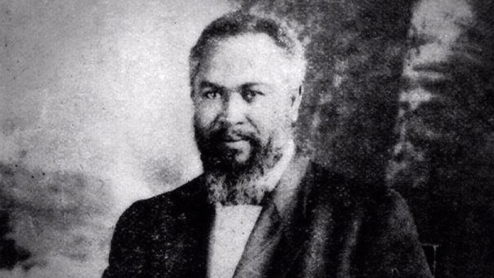

William Joseph Seymour
Leader of the Azusa Street Revival

William Joseph Seymour, Leader of the Azusa Street Movement
Time line of William Seymour's life:
- 1870 - Born in Centerville, Louisiana
- 1895 - Moved to Indianapolis, Indiana and worked as a waiter in upscale restaurants and hotels.
- 1901 - Moved to Cincinnati, Ohio where he joined the Church of God Restoration Movement, also called "The Evening Light Saints". He became blind in his left eye due to chicken pox.
- 1902 - Became an ordained minister in the church of God
- 1905 - Moved to Houston and served as temporary replacement pastor for Lucy Farrow. Met Charles Fox Parham who had strong impact on his spirtual direction and career.
- 1906 - Preached in a church established in los Angeles by Julia M. Hutchins. Locked out of her church for his teaching on speaking in other tongues as evidence of the Holy Spirit's baptism. Started a prayer meeting at Edvard Lee's house. Move meeting to home of Mr and Mrs. Richard Asberry where he finally experienced speaking in tongues himself. Azusa Street Mission was formed. Azusa revival lasted for about 3 years.
- 1907 - Missionary from his movement reached various countries of the world.
- 1908 - Got married to Jennie Evans Moore. Lost control of the Apostolic Faith newspaper after split with Florence crawford and Clara Lum
- 1911 - Split occured between him and William Durham that caused more harm to his ministry.
- 1914 - His congregation shrunk further to a small, locak African American church. He continued as pastor of this church until his death. Pentecostalism had spread to major cities in U.S.
- 1915 - Published a handbook on "The Doctrines and Discipline Of the Azusa Street Apostolic Faith Mission of Los Angeles.
- 1922 - Died of as sudden heart attack at the age of 52 and was buried at Evergreen Cemetery in Los Angeles.
"Seymour was the most influential black leader in American religious history."
If you have time, you should read more about this great servant of God on his Wikipedia entry.